Your Code as a Crime Scene
ZEIT Devsnack 2026-01-05
Welcher Code ist komplexer?
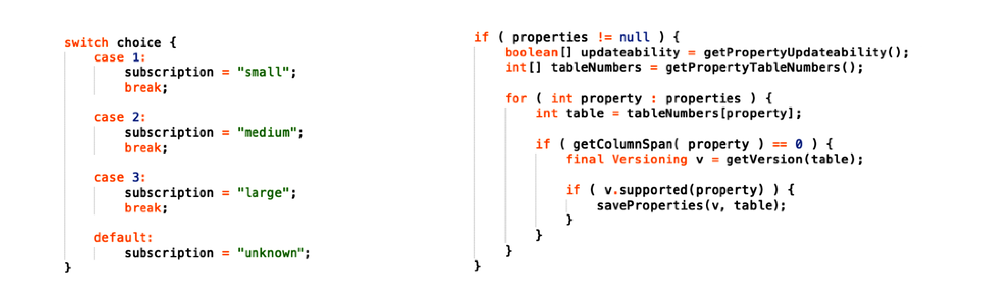
Fangfrage: Welcher Code, der links oder der rechts, ist komplexer?
Welcher Code ist komplexer?
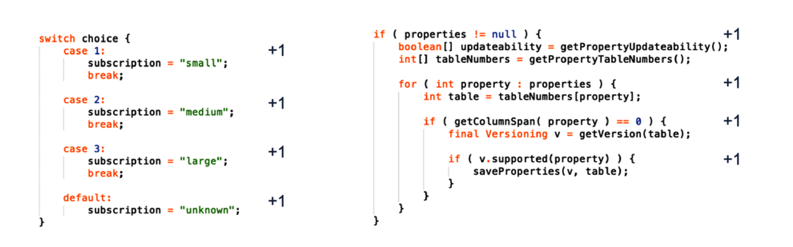
Beide sind gleich komplex. Wenn man als Metrik die "zyklomatische Komplexität" heranzieht.
Die misst, wie viele unabhängige Pfade es durch den Quellcode gibt.
Was sie nicht berücksichtigt, sind die inhaltliche Komplexität oder die Lesbarkeit des Codes.
Die zyklomatische Komplexität als Softwaremetrik stammt aus den 70er Jahren.
Es gibt zig andere Methoden zur Messung von Code Komplexität.
Mir gefällt die "Whitespace Metrik".
"Negative Space" als Komplexitätsmetrik
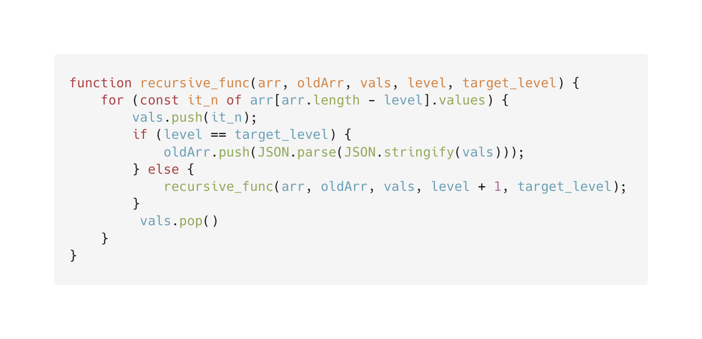
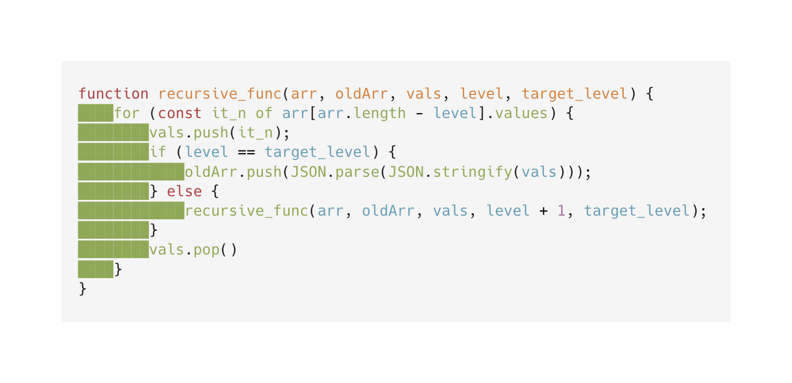
Da misst man einfach die Menge von Whitespace, also die Verschachtelung.
Das ist total simpel, und genauso gut wie alles andere.
Du könntest genauso gut die Programmiersprache nehmen.
Oder – Spaß beiseite – die Komplexität nach Halstead
(relativ Komplex: Anzahl von Operatoren und Variablen) oder Lines of Code.
Auch die beiden sind genauso gut wie alles andere.
Weil: Die sind alle gleich schlecht.
Man hat wiederholt Studien gemacht, in denen Programmierer in MRT Röhren gesteckt wurden.
Wo man Platzangst hat, und es tierisch laut ist. Also stressige Umgebung.
Dort drin sollten sie dann verschiedenen Code verstehen und debuggen.
Das ist so ähnlich wie wenn Marco bei einem Incident hinter dir steht und über die Schulter schaut.
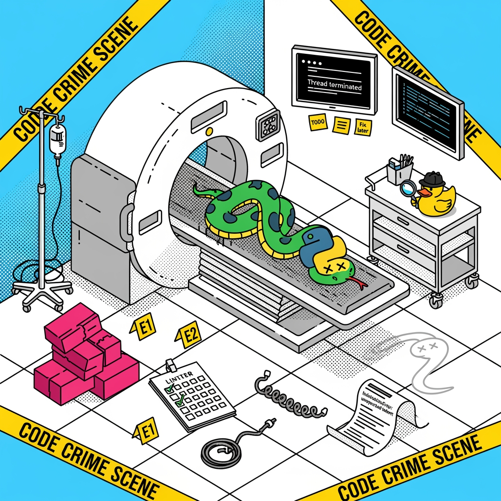
Und da stellte sich heraus, dass _keine_ des getesteten Metriken oder Methoden zur Komplexitätsmessung mit der subjektiven Komplexität in signifikanter Korrelation standen. Also anders gesagt: die theoretische Analyse des Codes hat nicht zur wahrgenommenen Komplexität gepasst.
Dazu kommen weitere Schwächen, die inhärent sind in der statischen Quellcodeanalyse.
- Wenn du mehrere Zeilen auslagerst in eine Funktion – hilft das, oder musst du die erst durchlesen?
- Jede Metrik, die zum Ziel wird, verliert ihre Wert. (Goodharts Law)
Also kann man das Thema vergessen, weil Nerds es kaputtgeredet haben?
Nein. Man kann es weiterdenken.
Zum Beispiel, indem man zunächst die Sinnfrage stellt.
Complex code is only a problem
Und darauf kommt, dass Komplexität an sich noch kein Problem ist.
Sondern erst, wenn wir mit ihr umgehen müssen.
Komplexer Code, der irgendwo stabil läuft, und keine Probleme macht, ist doch fein.
Das Zitat stammt von Adam Tornhill.
Adam Tornhill
Schwedischer Softwareentwickler.
Psychologie und Forensik.
Software-Architektur und Code-Analyse.
Buchautor.
We'll never be able to understand complex, large-scale systems just by looking at a single snapshot of the code.
Die zentrale Idee des Buches ist, dass wir große und komplexe Systeme nicht verstehen können, wenn wir nur statischen Code anschauen oder analysieren. Sondern wir müssen uns auch die Umgebung und Interaktionen anschauen.
Und weil Tornhill eben auch Forensik studiert hat, kam er auf die schöne Idee, da Parallelen zu ziehen.
Was das Thema zum Einen catchier macht. Und ihn auf neue Ideen brachte.
Das vergleichende Beispiel aus der Kriminalgeschichte ist Jack the Ripper.
Geografisches Profiline. Erklären.
Diese Stadtplan Metapher lässt sich auch auf Code anwenden.
Es gibt eine Software/Library, die Codebasen als Stadt darstellt.
Jedes Haus ist ein File oder Klasse, jeder Block ein Modul.
Die Fläche und Höhe haben ihre Bedeutung.
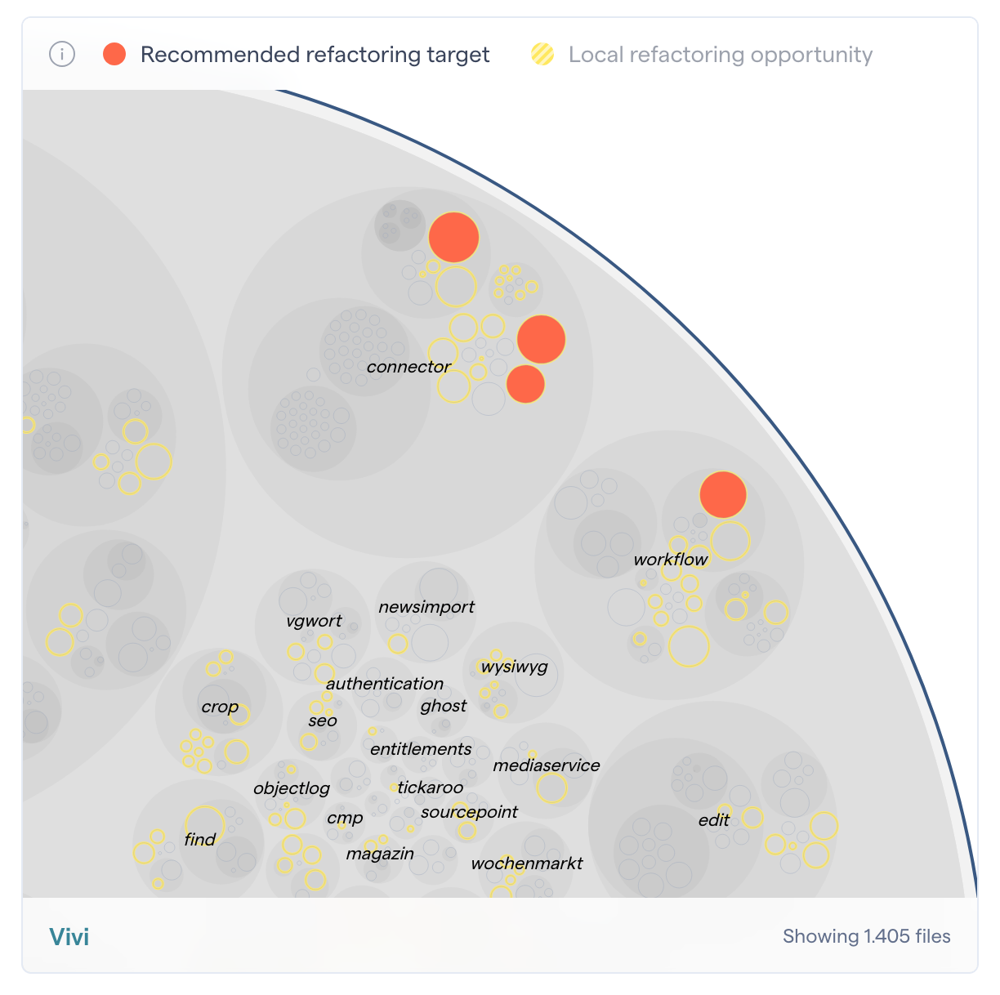
Diese Idee wendet Tornhill auch auf seine sogenannte Hotspot Analyse an.
Diese reduziert eine große Codebasis auf kritische Module oder Bereiche,
bei denen z.B. Testing und Refactoring mehr Wert haben als in anderen.
Aber das ist nicht nur statische Code-Analyse, das hatten wir schon.
Sondern es wird ergänzt um dynamische und externe Informationen.
Was soll das heißen?
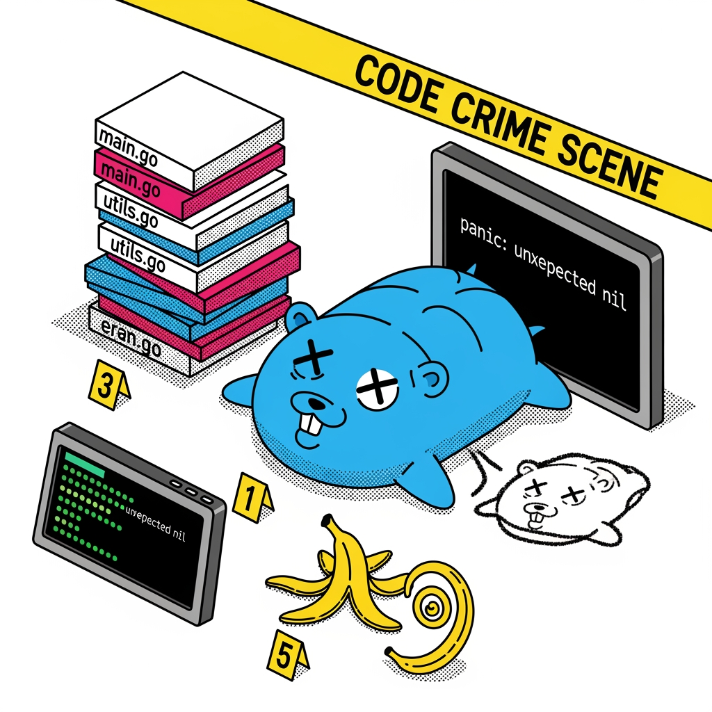
Teil 1/4
Code Metrics
Was sind die Tatorte?
Code Churn
Welche Files werden häufig angefasst?
The number of times that a code changes is a better predictor of defects than code size.
— Graves, Karr, Marron, Siy / Moser, Pedrycz, Succi
Es gibt Studien, die besagen, dass Code, der häufig angefasst wird, mehr Fehler enthält.
Hier greift natürlich auch ein Kreislauf: sobald ich weiß dass da Fehler drin sind, fasse ichd en Code ja wieder an.
Aber: diese Info – egal wie man sich die Henne-Ei-Frage beantwortet – ist interessant.
Und das kann ich isoliert ansehen, oder in Beziehung setzen zur Code-Komplexität wie wir sie kennen.
Hotspot wird umso hotter: Komplexität + Energie, die reingesteckt wird.
Change Coupling
Keine Abhängigkeit im Code, aber zwei Files werden immer wieder gemeinsam angefasst.
Eine weitere Idee ist es, Abhängigkeiten sichtbar zu machen, die nicht im Code zu finden sind aber in Git.
Dazu werden Git Commits durchsucht, die betroffen Files angesehen, und da schaut man nach Mustern oder Wiederholungen.
Change Coupling
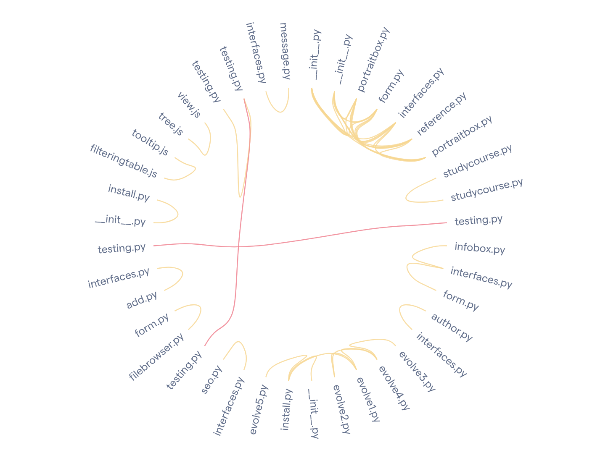
So könnte man das darstellen.
Es ergeben sich bei CHange Coupling zwei interessante Fragen.
- Philosophische: wenn Tests immer zusammen mit dem Code angefasst werden ...
- entweder werden Tests erweitert und angepasst
- oder die Tests hängen zu sehr an den konkreten Implementierungsdetails und zu wenig am Feature
- Praktische
- entsprechend müsste man die Test Files ggf filtern per Pattern Matching
- individuell pro Projekt.
Deutet darauf hin, dass solche Analysen nur Indizien liefern, oder Hinweise darauf wo man genauer hinschauen sollte. Sie liefern nicht automatisch sinnvolle Handlungsanweisungen.
Was tun mit den Hotspots?
Technical Debt
Refactoring
Code Reviews
Tests
Onboarding
Code Reviews: so nach "Cold Case" manier diese Stellen ansehen.
Oder bei normalen Code Reviews hat man eine Warnung, dass das hier ein heißer Bereich ist.
Viel Änderung, viele Defekte, _und_ komplexer Code.
Individuals with short time horizons face higher risk of criminal involvement, simply because they can reap the rewards of the crime here and now, whereas the punishment lies in an indefinite future.
— Åkerlund, Golsteyn, Grönkvist, Lindahl
Das Thema technische Schulden wird im Buch von Adam Tornhill übrigens mit diesem Zitat aus der forensischen Literatur eingeleitet.
Menschen, die nicht weit in die Zukunft denken, bewerten kurzfristige Vorteile höher als langfristige Probleme, und haben deshalb eine größere Wahrscheinlichkeit kriminell zu werden.
Teil 2/4
Veränderungen
Wie verändert sich der Code?
Hotspots betrachten nicht nur den aktuellen Zustand von Code, sonder auch seine Geschichte.
Und das kann ich mir auch nochmal im zeitlichen Verlauf anschauen.
Darauf gehen wir im nächsten Teil ein.
Die Illustration hier erinnert uns an einen weiteren Aspekt: viele Tools und Ideen sind sprach-agnostisch. Ich kann solche Analysen nach Tornhhill auch auf Yaml Files oder Markdown anwenden.
Complexity Trends
zeitlichen Verlauf sichtbar machen
Complexity Trends
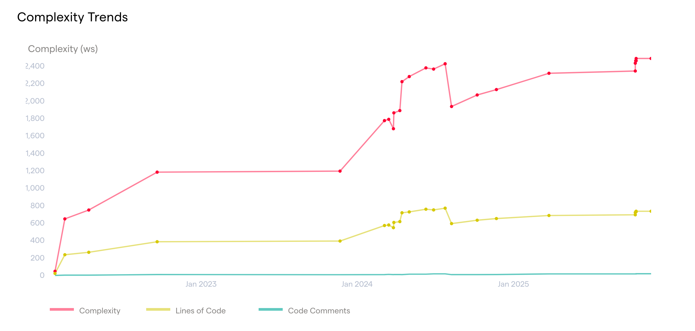
Das kann sinnvoll und okay sein.
Und manchmal kommt Komplexität auch einfach aus dem Business Kontext, da kann der Code nichts für.
Aber diese Verläufe und ein Auseinanderdriften sind ein wichtiger Hotspot, um genauer hinzusehen.
Witnesses / Surveillance
externe Quellen heranziehen
Externe Quellen,
time-in-development per file:
number of defects per file: Bugtickets (oder FIX-commits)
percentage of unplanned work
percentage of unplanned work
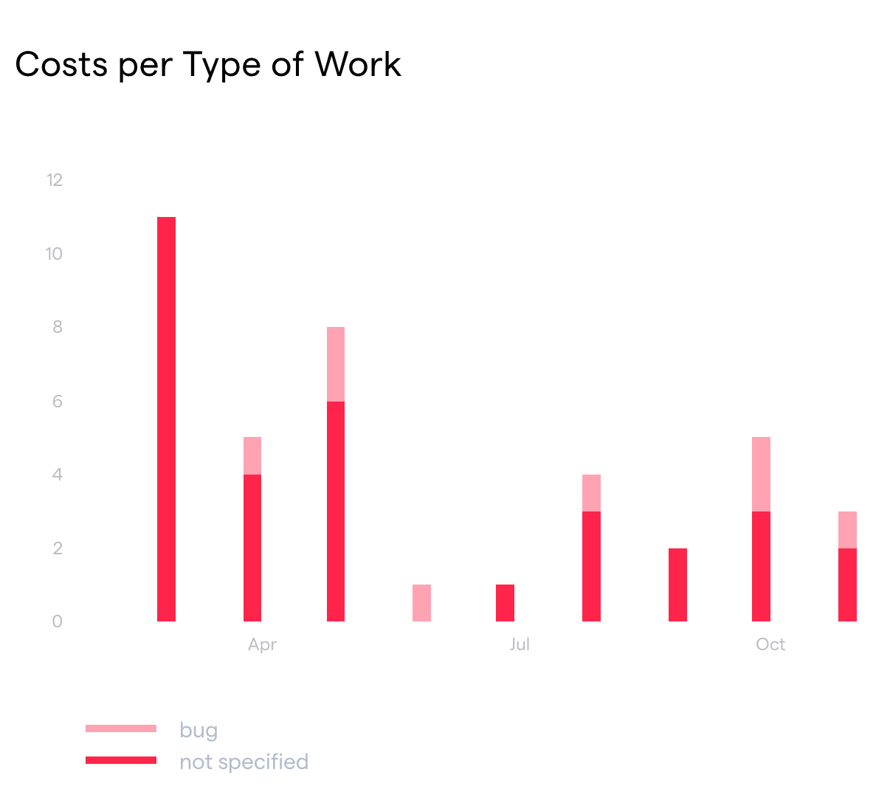
Auch hier wieder. Es geht nicht primär um das Verhindern von Bugs, oder das Vermeiden von Arbeit.
Sondern darum, zu wissen, wo Arbeit und Aufmerksamkeit am sinnvollsten eingesetzt sind.
Teil 3/4
The Social Side of Code
Wer war am Tatort?
Apropos Einsatz: im dritten und letzten Abschnitt des Buches geht es um die Menschen, die den Code schreiben. Was lässt sich darauf ableiten? Jenseits von Git Blame?
Commit Authors analysieren
Number of Unique Authors (or teams) in each file (during the last year)
Brooke's law and Conway's law
Truck factor
Abandoned Code
Fragen wer die Definitionen kennt.
Brookes Law:
Conways Law:
Von 133 populären GitHub Repositories haben zwei Drittel einen Bus-Faktor von 1 oder 2.
Abandoned Code: Was wurde von Menschen geschrieben, die nicht mehr im Unternehmen sind?
Abandoned Code
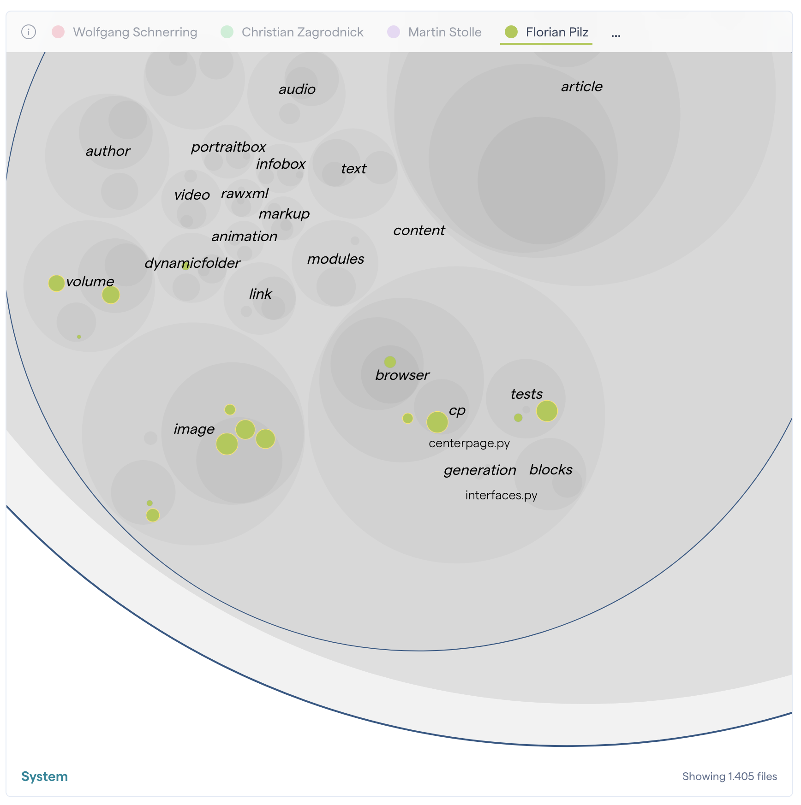
Auch hier wieder: insbesondere die Kombination aus Bugs und Komplexität und Churn ist wichtig.
Es macht ja nichts per se, wenn Code lange stabil ist und funktioniert.
Und auch nicht, wenn es Teile sind ... aber ganze Module sind schon schwieriger.
Hier ein Screenshot, das Teile von Vivi mit sogenanntem abandoned Code zeigt.
Teil 4/4
Tooling
Werkzeuge für die forensische Analyse
Die Arten von forensischer Code Analyse, die ich hier angerissen habe, bestehen aus zwei bis drei Teilen.
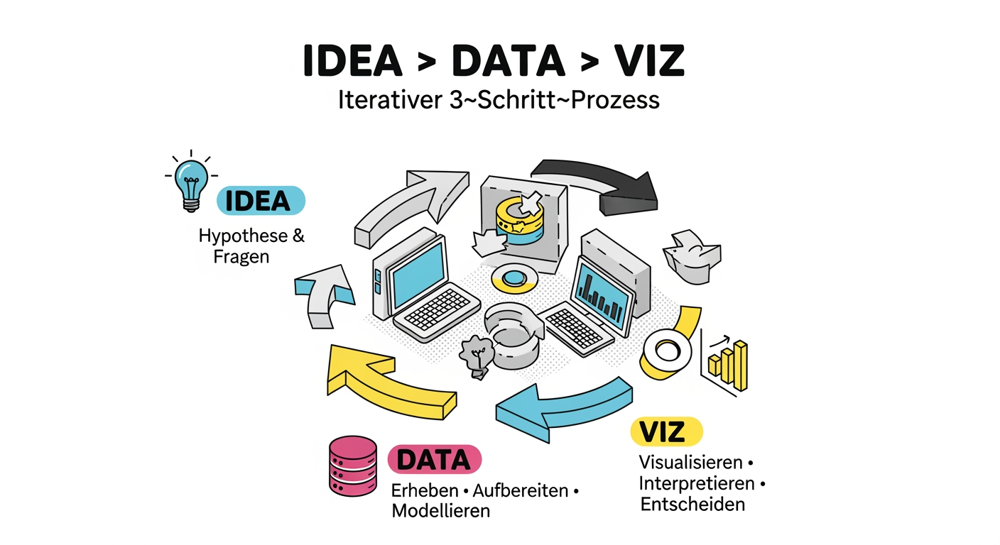
Illustration für den Vibe, (kein Diagramm)
- Erstens muss man wissen, wonach man sucht oder was man anschauen will.
- Zweitens braucht es die Datenquellen – in der Regel den Quellcode und Git, aber ggf auch externe Quellen wie Jira.
- Drittens eine gute Datenvisualisierung.
Und diese drei Dinge können sich wieder gegenseitig beeinflussen.
Limits
Kein Ersatz für andere Best Practices.
Keine automatischen Action Items.
Kann ein guter Anreiz für Diskussionen sein.
... oder um etwas zu verargumentieren, was man eh machen will.
Fragen und Diskussion
Wer ist der Mörder?
 Thomas Puppe
Thomas Puppe